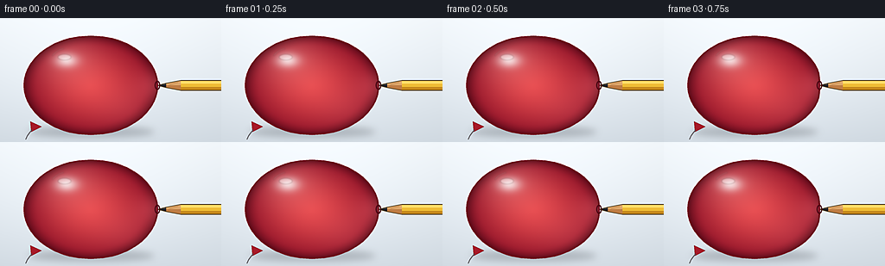
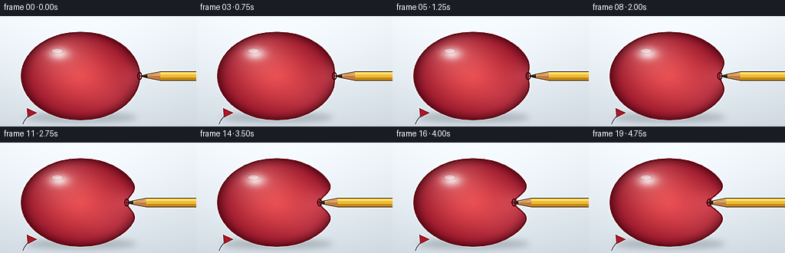
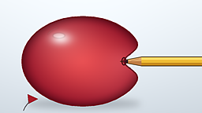

CODING AGENTS AS PIXEL WORLD MODELS
traex/Seed-2.1-Pro-0915 · phygen_025
点击播放 · 原生 RGB 像素
逐轮保存的候选
回放视频、检查图与代码变化。
每份候选均可单独播放。实际图片检查记录在下方工具轨迹中。
候选 01播放与检查图
点击播放 · 原生 RGB 像素


展开代码变化
--- 上一保存版本
+++ 本次保存版本
@@ -0,0 +1,315 @@
+from pathlib import Path
+
+import numpy as np
+from PIL import Image, ImageDraw, ImageFilter
+
+import artifact_io
+
+
+WIDTH, HEIGHT = 256, 144
+FRAME_COUNT, FPS = 20, 4.0
+SUPER_SAMPLE = 4
+SW, SH = WIDTH * SUPER_SAMPLE, HEIGHT * SUPER_SAMPLE
+
+BALLOON_CENTER = (105.0, 78.0)
+BALLOON_RADII = (77.0, 57.0)
+PENCIL_Y = 78.0
+SURFACE_X = BALLOON_CENTER[0] + BALLOON_RADII[0]
+
+
+def smoothstep(edge0, edge1, value):
+ value = np.clip((value - edge0) / (edge1 - edge0), 0.0, 1.0)
+ return value * value * (3.0 - 2.0 * value)
+
+
+def scaled(points):
+ scale = SUPER_SAMPLE
+ return [(round(x * scale), round(y * scale)) for x, y in points]
+
+
+def draw_polygon(draw, mask_draw, points, fill):
+ points = scaled(points)
+ draw.polygon(points, fill=fill)
+ mask_draw.polygon(points, fill=255)
+
+
+def render_frame(index):
+ t = index / (FRAME_COUNT - 1)
+ press = smoothstep(0.0, 1.0, t)
+
+ # The pencil advances continuously. The stretched latex seal lags just behind
+ # the sharp graphite tip once the outer layer has been entered.
+ tip_x = SURFACE_X - 30.0 * press
+ penetration = 5.0 * smoothstep(0.32, 0.95, t)
+ seal_x = tip_x + penetration
+ dent_depth = SURFACE_X - seal_x
+
+ x = np.arange(SW, dtype=np.float32)[None, :] / SUPER_SAMPLE
+ y = np.arange(SH, dtype=np.float32)[:, None] / SUPER_SAMPLE
+ cx, cy = BALLOON_CENTER
+ rx, ry = BALLOON_RADII
+
+ top_color = np.array([238, 243, 247], dtype=np.float32)
+ bottom_color = np.array([204, 213, 221], dtype=np.float32)
+ vertical = np.linspace(0.0, 1.0, SH, dtype=np.float32)[:, None, None]
+ canvas = top_color[None, None, :] * (1.0 - vertical) + bottom_color[None, None, :] * vertical
+ canvas = np.broadcast_to(canvas, (SH, SW, 3)).copy()
+
+ glow = np.exp(
+ -(((x - 108.0) / 150.0) ** 2 + ((y - 72.0) / 105.0) ** 2)
+ ) * 15.0
+ canvas += glow[..., None]
+
+ image = Image.fromarray(np.clip(canvas, 0, 255).astype(np.uint8), "RGB")
+ shadow = Image.new("RGBA", (SW, SH), (0, 0, 0, 0))
+ shadow_draw = ImageDraw.Draw(shadow)
+ shadow_draw.ellipse(
+ scaled([(33.0, 126.0), (178.0, 138.0)]),
+ fill=(35, 40, 48, 62),
+ )
+ shadow = shadow.filter(ImageFilter.GaussianBlur(SUPER_SAMPLE * 4))
+ image = Image.alpha_composite(image.convert("RGBA"), shadow).convert("RGB")
+ canvas = np.asarray(image).astype(np.float32)
+
+ ellipse_value = ((x - cx) / rx) ** 2 + ((y - cy) / ry) ** 2
+ radial = np.sqrt(np.clip(ellipse_value, 0.0, 1.0))
+ side_curve = np.sqrt(np.clip(1.0 - ((y - cy) / ry) ** 2, 0.0, 1.0))
+ left_x = cx - rx * side_curve
+ base_right_x = cx + rx * side_curve
+ dent_profile = dent_depth * np.exp(-((y - PENCIL_Y) / 14.0) ** 2)
+ right_x = base_right_x - dent_profile
+ balloon_mask = (
+ (ellipse_value <= 1.0)
+ & (x >= left_x)
+ & (x <= right_x)
+ )
+
+ balloon_center_color = np.array([230, 73, 77], dtype=np.float32)
+ balloon_edge_color = np.array([139, 16, 38], dtype=np.float32)
+ edge_mix = np.clip(radial, 0.0, 1.0) ** 1.35
+ balloon = (
+ balloon_center_color[None, None, :] * (1.0 - edge_mix[..., None])
+ + balloon_edge_color[None, None, :] * edge_mix[..., None]
+ )
+
+ broad_light = np.exp(
+ -(((x - 78.0) / 38.0) ** 2 + ((y - 48.0) / 30.0) ** 2)
+ )
+ balloon = balloon * (1.0 - broad_light[..., None] * 0.34) + np.array(
+ [255, 158, 153], dtype=np.float32
+ ) * broad_light[..., None] * 0.34
+
+ specular = np.exp(
+ -(((x - 77.0) / 13.0) ** 2 + ((y - 49.0) / 8.0) ** 2)
+ )
+ balloon = balloon * (1.0 - specular[..., None] * 0.78) + 255.0 * specular[..., None] * 0.78
+
+ reflected_light = np.exp(
+ -(((x - 151.0) / 42.0) ** 2 + ((y - 105.0) / 28.0) ** 2)
+ ) * 0.20
+ balloon = balloon * (1.0 - reflected_light[..., None]) + np.array(
+ [255, 119, 124], dtype=np.float32
+ ) * reflected_light[..., None]
+
+ rim_shade = np.clip((radial - 0.78) / 0.22, 0.0, 1.0) ** 2
+ balloon *= 1.0 - rim_shade[..., None] * 0.34
+
+ stretched = np.exp(
+ -(((x - seal_x) / 24.0) ** 2 + ((y - PENCIL_Y) / 18.0) ** 2)
+ )
+ balloon = balloon * (1.0 - stretched[..., None] * 0.28) + np.array(
+ [255, 118, 126], dtype=np.float32
+ ) * stretched[..., None] * 0.28
+
+ canvas[balloon_mask] = balloon[balloon_mask]
+ image = Image.fromarray(np.clip(canvas, 0, 255).astype(np.uint8), "RGB")
+ draw = ImageDraw.Draw(image)
+
+ # Knot and a short loose string make the inflated object read as a balloon.
+ draw.polygon(
+ scaled([(35.0, 120.0), (48.0, 126.0), (36.0, 132.0)]),
+ fill=(166, 28, 43),
+ outline=(103, 13, 28),
+ )
+ string_points = [
+ (37.0, 129.5),
+ (34.0, 133.0),
+ (31.5, 136.5),
+ (29.5, 141.0),
+ ]
+ draw.line(scaled(string_points), fill=(92, 88, 92), width=SUPER_SAMPLE, joint="curve")
+
+ pencil_mask = Image.new("L", (SW, SH), 0)
+ pencil_mask_draw = ImageDraw.Draw(pencil_mask)
+ graphite_end = tip_x + 10.0
+ wood_end = tip_x + 27.0
+
+ shaft = [
+ (wood_end, PENCIL_Y - 5.7),
+ (270.0, PENCIL_Y - 5.7),
+ (270.0, PENCIL_Y + 5.7),
+ (wood_end, PENCIL_Y + 5.7),
+ ]
+ draw_polygon(draw, pencil_mask_draw, shaft, (238, 188, 54))
+ draw_polygon(
+ draw,
+ pencil_mask_draw,
+ [
+ (wood_end, PENCIL_Y - 5.7),
+ (270.0, PENCIL_Y - 5.7),
+ (270.0, PENCIL_Y - 2.1),
+ (wood_end, PENCIL_Y - 2.1),
+ ],
+ (255, 218, 103),
+ )
+ draw_polygon(
+ draw,
+ pencil_mask_draw,
+ [
+ (wood_end, PENCIL_Y + 2.0),
+ (270.0, PENCIL_Y + 2.0),
+ (270.0, PENCIL_Y + 5.7),
+ (wood_end, PENCIL_Y + 5.7),
+ ],
+ (196, 137, 29),
+ )
+
+ wood = [
+ (graphite_end, PENCIL_Y - 2.4),
+ (wood_end, PENCIL_Y - 5.7),
+ (wood_end, PENCIL_Y + 5.7),
+ (graphite_end, PENCIL_Y + 2.4),
+ ]
+ draw_polygon(draw, pencil_mask_draw, wood, (222, 167, 106))
+ draw_polygon(
+ draw,
+ pencil_mask_draw,
+ [
+ (graphite_end, PENCIL_Y),
+ (graphite_end, PENCIL_Y + 2.4),
+ (wood_end, PENCIL_Y + 5.7),
+ (wood_end, PENCIL_Y),
+ ],
+ (190, 126, 70),
+ )
+ draw.line(
+ scaled([(tip_x + 14.0, PENCIL_Y - 0.8), (wood_end - 3.0, PENCIL_Y - 3.4)]),
+ fill=(151, 96, 51),
+ width=max(1, SUPER_SAMPLE // 2),
+ )
+
+ graphite = [
+ (tip_x, PENCIL_Y),
+ (graphite_end, PENCIL_Y - 2.4),
+ (graphite_end, PENCIL_Y + 2.4),
+ ]
+ draw_polygon(draw, pencil_mask_draw, graphite, (54, 57, 63))
+ draw_polygon(
+ draw,
+ pencil_mask_draw,
+ [
+ (tip_x, PENCIL_Y),
+ (graphite_end, PENCIL_Y),
+ (graphite_end, PENCIL_Y + 2.4),
+ ],
+ (34, 36, 41),
+ )
+ draw.line(
+ scaled([(tip_x + 2.0, PENCIL_Y - 0.55), (graphite_end - 1.3, PENCIL_Y - 1.45)]),
+ fill=(126, 130, 136),
+ width=max(1, SUPER_SAMPLE // 3),
+ )
+
+ outline_top = [
+ (tip_x, PENCIL_Y),
+ (graphite_end, PENCIL_Y - 2.4),
+ (wood_end, PENCIL_Y - 5.7),
+ (270.0, PENCIL_Y - 5.7),
+ ]
+ outline_bottom = [
+ (tip_x, PENCIL_Y),
+ (graphite_end, PENCIL_Y + 2.4),
+ (wood_end, PENCIL_Y + 5.7),
+ (270.0, PENCIL_Y + 5.7),
+ ]
+ draw.line(scaled(outline_top), fill=(83, 65, 35), width=SUPER_SAMPLE, joint="curve")
+ draw.line(scaled(outline_bottom), fill=(83, 65, 35), width=SUPER_SAMPLE, joint="curve")
+
+ # Red latex over the part of the pencil inside the silhouette gives a
+ # translucent, stretched-membrane appearance around the insertion point.
+ canvas = np.asarray(image).astype(np.float32)
+ pencil_inside = balloon_mask & (np.asarray(pencil_mask) > 0)
+ contact_distance = np.sqrt(
+ ((x - seal_x) / 15.0) ** 2 + ((y - PENCIL_Y) / 10.0) ** 2
+ )
+ overlay_alpha = np.clip(0.20 + 0.58 * contact_distance, 0.20, 0.82)
+ latex_tint = np.array([198, 47, 60], dtype=np.float32)
+ alpha = overlay_alpha[..., None]
+ canvas[pencil_inside] = (
+ canvas[pencil_inside] * (1.0 - alpha[pencil_inside])
+ + latex_tint * alpha[pencil_inside]
+ )
+
+ image = Image.fromarray(np.clip(canvas, 0, 255).astype(np.uint8), "RGB")
+ draw = ImageDraw.Draw(image)
+
+ boundary_left = []
+ boundary_right = []
+ for boundary_y in np.linspace(cy - ry, cy + ry, 120):
+ curve = math.sqrt(max(0.0, 1.0 - ((boundary_y - cy) / ry) ** 2))
+ boundary_left.append((cx - rx * curve, boundary_y))
+ deformed_right = (
+ cx + rx * curve
+ - dent_depth * math.exp(-((boundary_y - PENCIL_Y) / 14.0) ** 2)
+ )
+ boundary_right.append((deformed_right, boundary_y))
+ boundary = boundary_left + boundary_right[::-1]
+ draw.line(
+ scaled(boundary + [boundary[0]]),
+ fill=(112, 14, 31),
+ width=round(1.65 * SUPER_SAMPLE),
+ joint="curve",
+ )
+
+ # A small dark lip marks the puncture/seal without bursting the balloon.
+ draw.ellipse(
+ scaled(
+ [
+ (seal_x - 3.3, PENCIL_Y - 5.3),
+ (seal_x + 3.3, PENCIL_Y + 5.3),
+ ]
+ ),
+ outline=(82, 9, 23),
+ width=round(1.6 * SUPER_SAMPLE),
+ )
+
+ gloss = Image.new("RGBA", (SW, SH), (0, 0, 0, 0))
+ gloss_draw = ImageDraw.Draw(gloss)
+ gloss_draw.ellipse(
+ scaled([(67.0, 42.0), (82.0, 48.5)]),
+ fill=(255, 255, 255, 78),
+ )
+ gloss_draw.arc(
+ scaled([(58.0, 34.0), (103.0, 67.0)]),
+ start=205,
+ end=252,
+ fill=(255, 235, 235, 70),
+ width=SUPER_SAMPLE,
+ )
+ gloss = gloss.filter(ImageFilter.GaussianBlur(SUPER_SAMPLE * 0.7))
+ image = Image.alpha_composite(image.convert("RGBA"), gloss).convert("RGB")
+
+ image = image.resize((WIDTH, HEIGHT), Image.Resampling.LANCZOS)
+ image = image.filter(ImageFilter.UnsharpMask(radius=1.15, percent=55, threshold=3))
+ return np.asarray(image, dtype=np.uint8)
+
+
+def main():
+ frames = [render_frame(i) for i in range(FRAME_COUNT)]
+ artifact_io.save(np.stack(frames), Path(__file__).parent)
+
+
+if __name__ == "__main__":
+ import math
+
+ main()
可观测工具轨迹
实际执行的命令与返回图片。
命令 1exit 0
/bin/bash -lc 'cat prompt.txt GENERATION_RULES.md task_spec.json'
命令 2exit 0
/bin/bash -lc 'rg --files'
命令 3exit 0
/bin/bash -lc "find . -maxdepth 2 -type f -name 'artifact_io*' -o -name '*.py'"
命令 4exit 0
/bin/bash -lc "sed -n '1,240p' artifact_io.py"
命令 5exit 0
/bin/bash -lc 'python generate.py'
视觉工具实际返回图片 1

视觉工具实际返回图片 2

保存候选 1 份；完成命令 5 次；可验证图片返回 2 张。原始 API 响应与完整日志保留在本地。